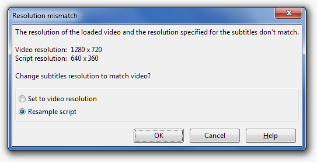

ASS subtitle files are, to some extent, video independant and can be used with video files other than the one they were created with. This is achieved by using a virtual video resolution which controls how font sizes and coordinates are interpreted, which is commonly known as the "script resolution". Unfortunately, due to some bugs in the reference implementation of the subtitle format (VSFilter), rendering subtitles whose script resolution is not equal to the actual video resolution works poorly.
Because the behavior of mismatched script and video resolutions can be confusing, we recommend keeping them the same when doing any complex styling. If you are releasing a single subtitles file with multiple videos of different resolutions, the Resolution Resampler can be used to convert a single file to each video resolution. However, if you're just creating simple styled subtitles, you normally should not have to worry about this.
There are several categories of things which are affected by the script resolution:
Absolute coordinates (margins, \pos, \move, \clip, vector drawings): all absolute coordinates are in script resolution pixels and work sensibly.
Font sizes: the font size in ASS is the line height in script resolution pixels. Note that this is not the normal definition of font size, and that it does not use the width at all. As a result, the script resolution can not be used to adjust the aspect ratio of the subtitles for anamorphic video.
Border sizes, shadow distance and blur strength: these can be in either script resolution or video resolution pixels. Which is used is controlled by the ScaledBorderAndShadow field in the header: if yes, script resolution is used, if no, video resolution is used. Scaling them relative to the script resolution should always be enabled.
The script resolution can be changed either by simply changing the value in the Properties dialog, or by resampling the script to a new resolution with the Resolution Resampler tool. Which to do depends on why you need to change the resolution. If you currently have an unstyled subtitle script which was set to the wrong resolution for whatever reason, change it in the Properties dialog. If the script has already been styled and you now want to use it with a video of a different resolution, use the Resolution Resampler.
You can ignore this entirely unless you are creating subtitles which need to exactly match a color in the video (such as if you are masking a portion of the screen with a vector drawing).
Colors in ASS are specified as BGR values, but videos are normally stored in YCbCr, and there are several possible conversions between the two. In some situations the subtitle renderer needs to know which color matrix was used by Aegisub to be able to correctly match Aegisub's rendering of the subtitles. This is normally automatically set correctly by recent versions of Aegisub, but you may need to manually adjust it if working with scripts created by pre-3.1 versions.
When opening a video which has a different resolution from the script's resolution, by default Aegisub will ask you what to do.
If the video and the script have the same aspect ratio, you'll get the following dialog:

"Resample script" will resample the subtitles to the new video's resolution as if you had used the Resolution Resampler, and is normally what you want if you're updating pre-existing subtitles for the video you just opened.
"Set to video resolution" will simply set the script resolution to the video's resolution. This is the correct thing to do only if the subtitles actually match the video you just opened already, but someone previously changed the script resolution to an incorrect value.
Cancel or hitting ESC will leave the script resolution at its current value. You want to do this if you are opening a lower-resolution work raw after the subtitles have already been styled for the final video resolution.
If the video's aspect ratio is different from the script's, you'll get the following dialog:

There are a few common scnarios where the aspect ratio will have changed:
The new video is anamorphic while the script was created with a pre-stretched video (or vice versa). This typially happens with DVDs, where a 720x480 image is stretched to either 640x480 or 853x480 on playback. In this case you want to stretch the subtitles to the new aspect ratio, as the stretching will be canceled out by the anamorphic rendering.
The original video contained only the content area and the new video has added black borders on either the top and bottom or left and right. Alternatively, the original video was a pan-and-scan version, while the new video contains the full image. Select "add borders" for this case.
Either the original video was black-bordered and the new video is not, or the new video is a pan-and-scan. Select "remove borders".